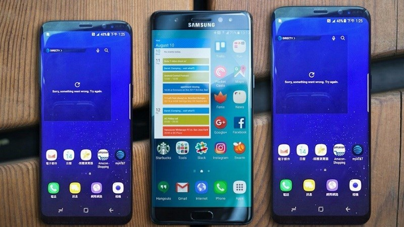

Giàn Trần: 19/3/2017

Mới đây, trang Android Authority vừa mới dẫn nguồn một báo cáo từ BusinessKorea, dự đoán rằng Galaxy S8 sẽ là một quả bom thật sự từ Samsung, và doanh số của thiết bị này gần như chắc chắn sẽ vượt mặt thế hệ đàn anh Galaxy S7.
Năm ngoái, bộ đôi Galaxy S7 và S7 Edge đã đạt đến số lượng máy bán ra khổng lồ, lên tới 50 triệu chiếc. Đây quả thực là một nhận định khá tham vọng dành cho những siêu phẩm kế tiếp nhà Samsung.
Đoạn video dù không hé lộ thêm bất cứ điều gì về Galaxy S8 nhưng rõ ràng đã thu hút được đến 26 triệu lượt xem và phần lớn có những phản ứng khá tích cực. Liên tiếp các mẫu quảng cáo tiếp theo dù đơn giản nhưng vẫn gây hiệu ứng tốt và nhắc nhở người dùng về sự xuất hiện của Galaxy S8 (và S8 Plus) vào ngày 29/3 sắp tới.
Bên cạnh đó, dựa trên những hình ảnh rò rỉ và thông số cấu hình mạnh mẽ của S8, S8 Plus, nhiều người dùng cũng như giới yêu thích công nghệ đã có cái nhìn khá tổng quan về thiết bị này. Samsung cũng không phải bỏ sức quá nhiều vào các hoạt động marketing truyền thống để quảng bá cho thiết bị của họ.
Rất dễ để hình dung Galaxy S8 sẽ là một thiết bị với ngoại hình độc đáo, các cạnh bên được bo cong và phần màn hình được làm sát ra các cạnh ấn tượng, tỉ lệ màn hình mới cùng cấu hình và camera mạnh mẽ nhất hiện tại. Đó chẳng phải là tất cả những gì chúng ta cần ở một chiếc smartphone hay sao!
Mặc dù các thông tin trên có vẻ ấn tượng, nhưng việc S8 liệu có thể vượt mặt người đàn anh S7 vẫn là một điều rất khó nói. Đặc biệt trong bối cảnh Samsung vừa trải qua sự cố lớn với Galaxy Note 7 và thế hệ S8 cũng được dự đoán sẽ có giá cao hơn đáng kể so với người tiền nhiệm.
Xem Thêm:
Galaxy S8 đọ dáng cùng với S8 Plus trong những hình ảnh rò rĩ mới nhất
Địa chỉ: Phòng , Lầu 3, Tòa nhà Inovation công viên phần mềm Quang Trung Q.12 TP HCM
CSKH: (04) 1080
Khiếu nại góp ý: 0987654321
Tìm chúng tôi trên facebook